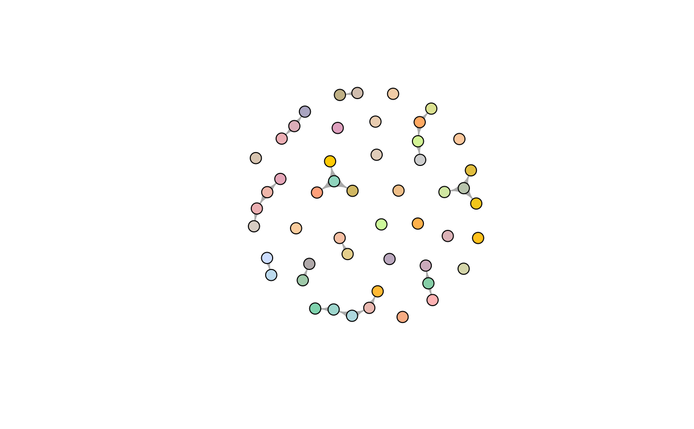

This function creates an igraph object from a given epicontacts
object containing a 'contacts' dataframe.
# S3 method for class 'epicontacts'
as.igraph(x, ...)An epicontacts object.
Further arguments passed to as.igraph
An igraph object (from the igraph package). Note: any
column called "name" in the original linelist will be stored as a new
vertex attribute in the igraph object named 'epicontacts_name'.
This is due to the inherent behaviour of igraph creating its own 'name'
vertex attribute.
if (require(outbreaks) && require(igraph)) {
## build data
x <- make_epicontacts(ebola_sim$linelist, ebola_sim$contacts,
id = "case_id", to = "case_id", from ="infector",
directed = TRUE)
## subset data - keep 50 cases from linelist with contacts
ids <- get_id(x, "common")[1:50]
ids
x <- x[ids, ids]
## make igraph object with associated attributes from epicontacts object
net <- as.igraph(x)
net
plot(net, vertex.label = "", vertex.size = 10,
vertex.color = cases_pal(50))
}
#> Loading required package: outbreaks
#> Loading required package: igraph
#>
#> Attaching package: ‘igraph’
#> The following objects are masked from ‘package:stats’:
#>
#> decompose, spectrum
#> The following object is masked from ‘package:base’:
#>
#> union
